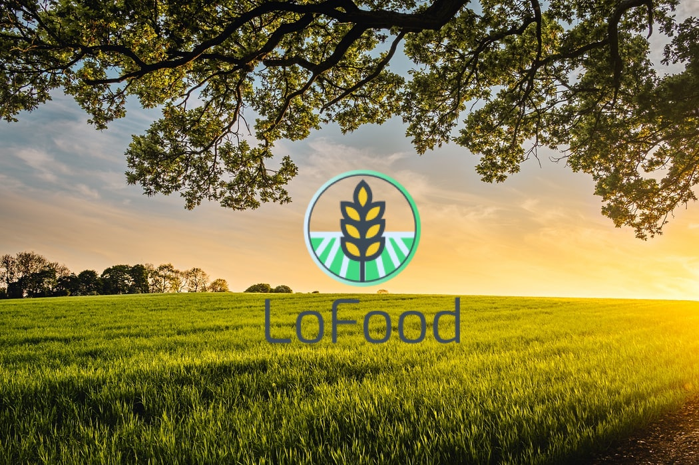
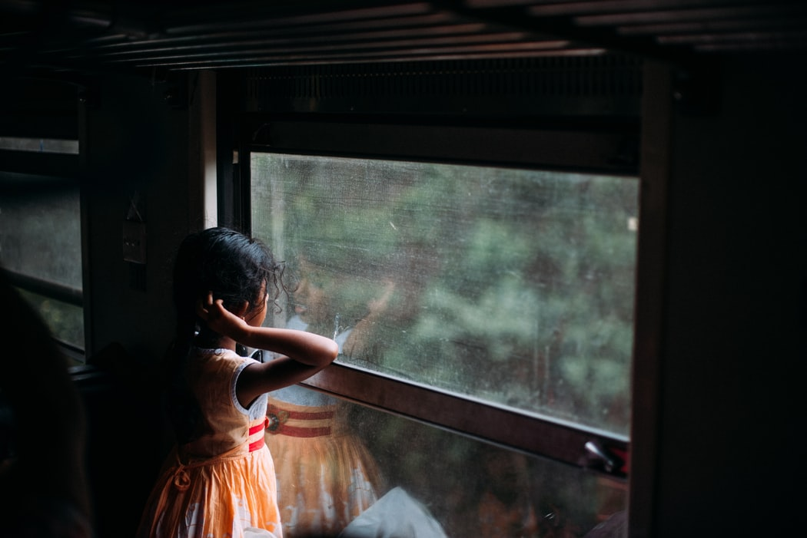
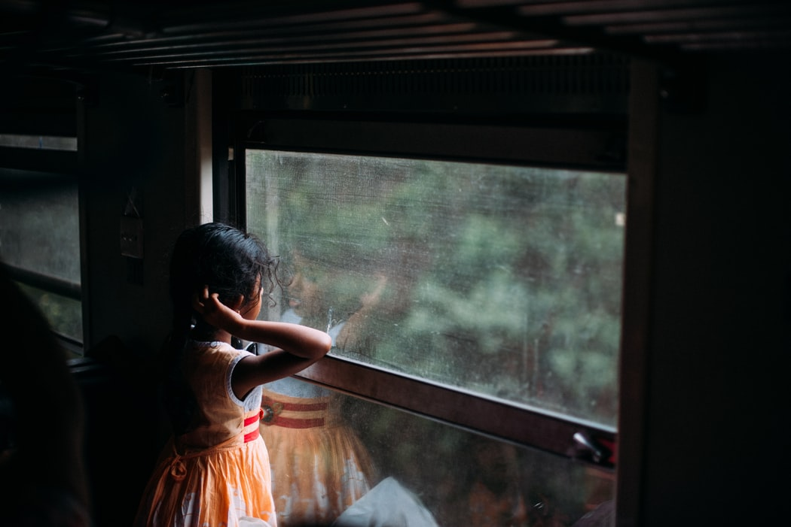

New Technologies 💻
During my last three years at ESSEC GBBA, I had the opportunity to follow several courses related to new technologies which raised my interest. On the one hand, I learnt about web-development languages such as HTML, CSS and PYTHON. On the other hand, I followed courses about Artificial Intelligence in Business and UX/UI Design.
{kind=link}
My Singapore Exchange 🇸🇬
Last year, I had the opportunity to study on the ESSEC Asia Pacific Campus located in Singapore. Throughout this semester, I worked on several projects based on Asian markets. Consequently, I learnt a lot about this market's needs and noticed that the level of fresh and organic food there was extremely low compared to France. As a result, this observation motivated me to work later on this industry in Singapore.

Food Industry 🍇
When I was in primary school, I used to go to a farm located next to my home, to pick my vegetables and fruits. Since then, I found it highly difficult to find such a quality of fresh products in a common supermarket. Moreover, with the advent of the mass distribution, farmers are less solicited and payed. As a result, this analysis brought me to create Lofood, a website where you can order locally produced fresh and organic food. In this way, farmers can sell their products directly to customers online.
{kind=link}
LoFood 🥦
During my Ux/Ui Design Course I had the opportunity to work on a UX Research Spreadsheet to know more about my key customer segments behaviour. Generally, there are people with good income but no time. They want to stay healthy and their errands to be quick and delivered at home. As a result, LoFood becomes the solution to all their requests.

Asia 🌏
Last year, I had the opportunity to do an exchange semester in Singapore and it was the opportunity to travel across Asia and I really liked it. As a result, I would like to work in Asia after the end of my studies.
![ Volunteering in Sri Lanka 🇱🇰 I am actually Franco-Sri Lankan. My mother was borned and raised in Sri Lanka. As result, I often go to my second country and have the will to do something to help people there. Last year, during my summer, I worked in an ONG called SOS Children's Villages Sri Lanka. I taught to orphans children English and Mathematics everyday. I also participated in the organisation of cultural and sportive activities into the village. Consequently, I developed an interest into teaching children and do tutoring now in France.](images/fulls/srilanka.jpeg){kind=link}
Volunteering in Sri Lanka 🇱🇰
I am actually Franco-Sri Lankan. My mother was borned and raised in Sri Lanka. As result, I often go to my second country and have the will to do something to help people there. Last year, during my summer, I worked in an ONG called SOS Children's Villages Sri Lanka. I taught to orphans children English and Mathematics everyday. I also participated in the organisation of cultural and sportive activities into the village. Consequently, I developed an interest into teaching children and do tutoring now in France.